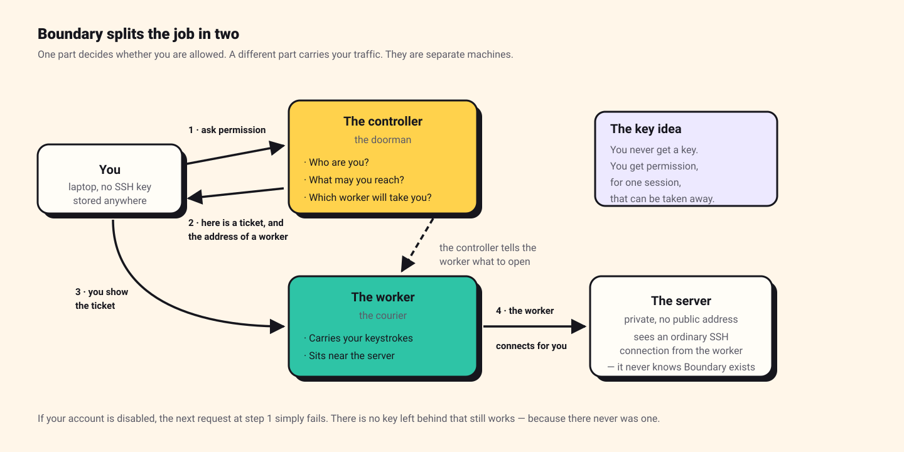

What is HashiCorp Boundary? A beginner's guide — and why I built it three times
If you have ever copied an SSH key onto a laptop and hoped for the best, this is for you. I will explain what Boundary does in plain words, why you would want it, and then hand you three complete walkthroughs — one in AWS, one in Azure, one in Google Cloud — that you can follow along with yourself.

Read it, then build it 🛠️
This page is written to be followed along with, not just read. Open the Excalidraw board beside it and work through the steps yourself — every screen I filled in is captured there, in the order I filled it in.
Reading gives you the shape of the thing. Only doing it gives you the understanding. I did not learn any of this by reading, and I do not think anyone does.
Contents
The problem, in plain words
Imagine you have a server running in the cloud. It holds something important, so you did the sensible thing and gave it no public address. Nobody on the internet can reach it.
Now you need to log into it. How?
The usual answer has two parts, and both of them age badly.
Part one: you give people a key
SSH normally works with a key pair. You keep a private key file on
your laptop, and the server keeps a matching public key in a file called
authorized_keys. If the two match, you are let in.
The trouble is what that key really is. It is a bearer credential — a thing where whoever holds it is the user. The server does not know who you are. It only knows that whoever is connecting has the right file.
So:
- The key does not expire. It works next year, and the year after.
- If someone copies it, there is no way to tell.
- When someone leaves the company, disabling their email account does nothing. Their key still works, on every server it was ever added to.
That last one is worth sitting with. You remove someone's access in one system in about four seconds, and their access to your servers continues until a human remembers every machine and edits a file on each one.
Part two: you build a door to get in through
Your server is private, so you cannot reach it directly. The traditional fix is a jump host (also called a bastion): a second machine that does have a public address. You log into that, then hop from there to the real server.
It works. But now you own a machine whose whole job is to be reachable from the internet, permanently, so that people can occasionally hop through it.
And nobody can answer the question afterwards
Someone asks: who logged into that server last Tuesday? With keys and a jump host, the answer lives in log files on the machines themselves, if those machines still exist, and if the logs were kept. There is no single place that knows, because there was never a single place that decided.
So what is Boundary?
Boundary is a piece of software that sits between people and servers, and changes the question being asked.
Instead of "do you have the key?" it asks "are you, right now, allowed to do this?" — and it checks that against your real identity every single time you connect.
The clever part is that it splits the work between two different kinds of machine.

The controller is the doorman. It answers three questions:
- Who are you? (it checks with your identity provider — your company login)
- What are you allowed to reach?
- Which machine should carry your traffic?
The controller never touches your actual session. It hands out permission and steps aside.
The worker is the courier. It does the carrying:
- It sits close to the server you want to reach — usually in the same private network.
- It receives your traffic and passes it on.
- It does not decide anything. It is told what to do by the controller.
The single most surprising thing, for me: the server you are connecting to has no idea Boundary exists. There is no agent installed on it, no special port open, no configuration. It just sees an ordinary SSH connection arriving from the worker, which is a normal machine on its own network. All of the access control happened before the packet ever arrived.
The words you will meet
Boundary has its own vocabulary, and the documentation assumes you already know it. Here it is in one place. Read it once now, and it will save you an hour later.
| Word | What it means |
|---|---|
| Controller | The brain. Decides who may do what. On HCP, HashiCorp runs this for you. |
| Worker | The courier. Carries your session traffic. Can be run by HashiCorp (a "managed worker") or by you (a "self-managed worker"). |
| Scope | A container, like a folder. There are three levels: global at the top, then orgs, then projects inside those. |
| Org | A scope that holds people — users, groups, roles, login methods. |
| Project | A scope that holds things — the servers you want to reach. Servers can only live here, never in an org. |
| Target | A thing you can connect to. Roughly: an address, a port, and some rules. |
| Host | An actual machine. A target points at one or more hosts. |
| Session | One connection, from the moment you are allowed in to the moment it closes. It has a time limit. |
| Auth method | How people log in. A password, or — much better — your company identity provider. |
| Credential store | Where the secrets for reaching a server are kept, so the person connecting never has to hold them. |
| Worker filter | A rule that says which worker should handle a session. This turns out to matter enormously — it is the whole subject of one of the walkthroughs. |
| Worker tag | A label you put on a worker, like region = ["uae-north"], so filters can select it. |
What happens when you connect
Step by step, the first time you use it:
- You log in. You run a command, or open the desktop app, and sign in with your normal work account. Boundary hands you a token — a temporary proof that you are you. It expires.
- You ask for something. You say "connect me to the profile server". You do this by name or by ID; you do not type an IP address, and in most setups you would not even know it.
- The controller checks. Are you allowed to reach that target? If no, it stops here and nothing on the network was touched.
- The controller picks a worker. It looks at your worker filter and chooses which machine will carry this session.
- You get a ticket. The controller sends back a session ID, a short-lived certificate, and the address of the worker to go to.
- You connect to the worker and show the certificate.
- The worker opens the real connection to the server, and copies bytes between you and it. To the server it looks like an ordinary connection from a machine nearby.
Notice that at no point did you hold a key to the server. You held permission, it was checked live, and it expires.
When would you actually use this?
Boundary is not free to run, and it is not worth the effort for a hobby server. It starts making sense when one or more of these is true.
People join and leave
The moment more than a couple of people need access, key management becomes a job nobody wants. With Boundary in front, removing someone is one action in your identity provider, the same action that removes their email.
Someone will eventually audit you
If you work in finance, healthcare, telecoms or anything regulated, someone will ask for a list of who accessed what. Boundary produces that as a side effect of how it works, rather than as a reporting project.
Your servers should not be reachable
If you are trying to get rid of public IP addresses and jump hosts, this is the thing that lets you. The server needs no inbound path from the internet at all.
Contractors, or people on machines you do not control
You can grant access to one server, for a limited time, without ever handing over a credential the person could keep. When the access ends, they retain nothing.
You have more than one cloud
This is the one I find most interesting, and it is why this guide exists. Boundary does not care which cloud a server is in. One login, one permission model, servers in AWS and Azure and Google Cloud behind it.
When not to use it. If you have three servers and one person, this is more machinery than problem. Use SSH keys, keep them in a password manager, and revisit this when the team grows. Good engineering includes knowing when a tool is too big.
Why I built it three times
I could have built this once, in one cloud, and written it up. I did it three times on purpose, and I learned more from the repetition than from the first build.
To find out what is actually Boundary and what is just cloud
When you build something once, you cannot tell which parts are the tool and which parts are the environment. Build it three times and the answer separates itself. The Boundary configuration barely changed between clouds. The networking around it changed constantly. That told me where the real difficulty lives — and it is not where I expected.
Because the three clouds forced three different designs
This is the part I did not plan. Each cloud pushed me toward a different answer for how traffic should reach the server:
- In Azure I used a private worker, and the session was relayed through HashiCorp's own workers.
- In AWS the target network had no route to the internet at all, so I needed two workers chained together.
- In Google Cloud I gave the worker a public address, and my laptop connected to it directly, with HashiCorp's workers out of the traffic path entirely.
Three designs, one product. Comparing them taught me what the settings actually do, in a way that reading the documentation had not.
Because interviews and real jobs are multi-cloud now
Saying "I know AWS networking" is common. Being able to explain why a peering connection needs manual routes in one cloud and not in another is much less common, and it comes from doing it twice.
What changes between clouds
Here is the honest summary of what actually differed. If you only take one table away from this page, take this one.
| AWS | Azure | Google Cloud | |
|---|---|---|---|
| The private network is called | VPC | VNet | VPC |
| Getting to the internet | Create an internet gateway, then add a route yourself | Works by default — there is no gateway resource | A default route already exists |
| Outbound only, from a private machine | NAT gateway plus a route | NAT gateway attached to the subnet | Cloud NAT — and not needed at all if the machine has its own public IP |
| Connecting two networks | Peering, then add routes on both sides by hand | Peering, and the routes appear automatically | Peering, automatic routes, but you must set it up from both sides |
| Firewall is called | Security group | Network security group (NSG) | VPC firewall rule |
| How a firewall rule finds its machine | You attach the group to the instance | You attach the NSG to the network card or subnet | The rule names a tag; any machine wearing that tag is covered |
| What happens by default | Inbound denied, outbound allowed | There are built-in rules you cannot delete | Inbound denied, outbound allowed, both at lowest priority |
Two of these caught me out properly, and both are in the walkthroughs:
- Google Cloud peering must be created from both sides. In AWS you request a peering and the other side accepts. In Google Cloud you write a matching configuration at each end, and until both exist the peering simply sits there inactive. I spent a while convinced I had made a mistake elsewhere.
- Google Cloud firewall rules are not attached to machines. You write a rule that applies to anything wearing a certain tag, then tag the machine. If you come from AWS this feels backwards for about a day, and then it feels better.
The three walkthroughs
Each of these is a complete build you can follow from an empty cloud account, and each has the original Excalidraw board behind it with every screenshot I took while doing it. They are ordered easiest to hardest.
| Walkthrough | Design | Start here if… |
|---|---|---|
| Azure — the private worker | Egress worker filter | …you are new to this. Fewest moving parts, and nothing of yours is exposed to the internet. |
| Google Cloud — your own front door | Ingress worker filter | …you do not want your session traffic passing through someone else's machines. |
| AWS — reaching a sealed network | Multi-hop egress | …the network holding your server has no way out at all. |
If you want the comparison rather than the builds — why these three designs differ and how to choose — that is a separate deep dive: Who actually carries the packets? It is the more advanced read, and it makes much more sense after you have built one of these.
Before you follow along
These walkthroughs are written to be done, not just read. A few honest warnings first.
This costs real money. You will create virtual machines, NAT gateways and an HCP Boundary cluster. NAT gateways in particular charge by the hour whether you use them or not. Set a budget alert before you start, and destroy everything when you finish. I did not, once, and the bill taught me the lesson better than any warning would have.
What you need:
- An account in the cloud you are following, with permission to create networks and virtual machines.
- An HCP account. There is a free tier for Boundary that is enough for these builds.
- A terminal, an SSH client, and basic comfort with the command line — you should know what
sshandsudodo, but nothing beyond that. - Two to four hours, honestly. The first build takes longest.
What you do not need:
- Any prior Boundary knowledge. That is what this page was for.
- Terraform. I built all of this by clicking, deliberately, because clicking teaches you what the resources are. Automating it afterwards is the right order.
- An identity provider. The walkthroughs use a simple password login. Connecting a real company login is a separate article.
A suggestion on how to follow along. Do not copy and paste blindly. When a step says to open a port, stop and ask yourself which machine is connecting to which, and in which direction. Almost every mistake I made in these builds was a firewall rule written in the wrong direction, and every one of them taught me something I would not have learned by pasting a working config.
If you get stuck, open the Excalidraw board linked in each walkthrough. The boards have the screenshots of every screen I filled in, which is usually faster than re-reading prose.
Further reading
- What is Boundary — HashiCorp — the official introduction, worth reading after this one.
- Domain model — the formal version of the vocabulary table above.
- HashiCorp's own tutorials — a good second source. They stay in one cloud, which is exactly the gap this guide tries to fill.
- Boundary and Microsoft Entra ID — how to replace the password login with a real company identity provider, and what goes wrong when you do.